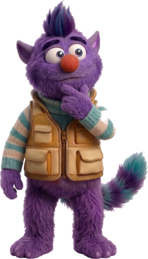

Most ASL apps just show you a video.
This one watches you sign it back.
Hand shape
Position
Movement
Palm direction
WATCHING



Learn ASL. Actually sign it.
QuickSign
Free · runs in your browser · camera never leaves your device